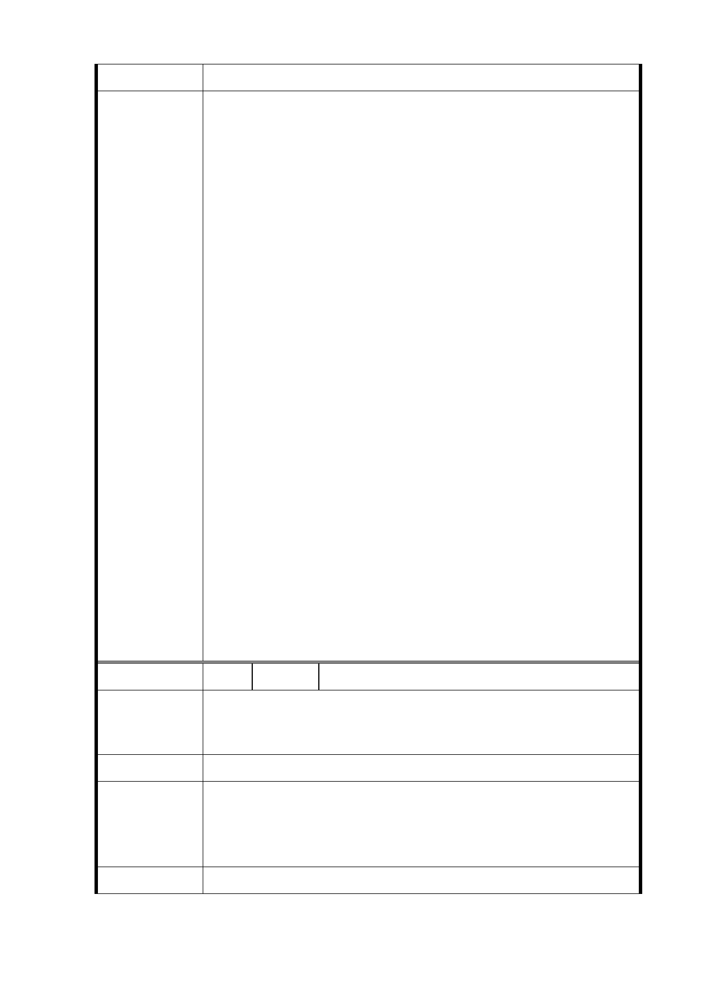

空間內部化等。
一、 本案經委員一致同意變更，除以下幾點修正外，餘依
本次會議所提補充資料及公展計畫書圖通過。
（一） 為能提供更多的開放空間以及對周邊地區環境品
質維護之考量，建蔽率由 40%調降為 35%，容積率
由 400%調降為 350%，於本計畫案後續實質開發計
畫提送都市設計審議時，應另由市府訂定公共開
放空間管理要點，納入開發計畫書附件，以確保
開放空間的公共性及綠能成效。
（二） 本案未來整個社區應為實現節能低碳及海綿城市
設計標準之智慧社區，所有建築物均需符合智慧
建築及綠建築，一並納入本案都市設計管制準則
中規範。
委 員 會 決 議 （三） 基地周邊福德街、福德街 84 巷、林口街 80 巷及
大道路等人行空間整理，除基地內退縮留設車道
外，街道對側之人行空間亦應一併整體考量。
二、 附帶決議：
（一） 請市府後續於都市設計及土地使用開發許可審
議、環境影響評估、捷運施工說明會時，分階段
提供詳細資料，持續與民眾溝通。
（二） 公共住宅戶數、福德平宅保存範圍等涉空間設計
範疇，留待都市設計及土地使用開發許可審議委
員會審議時討論。
三、 有關公民或團體所提陳情意見審決同本次會議決議及
市府回應說明。
編 號 2 陳情人 李○輝
本地此號連號83-85號現況即為福德平宅棟距空間透空空
陳 情 理 由 間，都更後希望保留本連號風景線、保護日照權，因此建議
委員會考慮本戶號風景權保留規劃，林口街人車分流現況。
建議辦法
一、 公共開放空間部分同編號 1。
市 府 回 覆 二、 另依本案都市設計準則規定，基地四周將建構完善之
意 見 人行步道系統，提供優質步行環境，以達人、車分流
之目標。
委 員 會 決 議 同編號 1
-8-